library(stringr)## Warning: package 'stringr' was built under R version 4.0.5library(dplyr)## Warning: package 'dplyr' was built under R version 4.0.5##
## Attaching package: 'dplyr'## The following objects are masked from 'package:stats':
##
## filter, lag## The following objects are masked from 'package:base':
##
## intersect, setdiff, setequal, unionlibrary(ggplot2)## Warning: package 'ggplot2' was built under R version 4.0.5library(tidyr)## Warning: package 'tidyr' was built under R version 4.0.5library(gridExtra)## Warning: package 'gridExtra' was built under R version 4.0.5##
## Attaching package: 'gridExtra'## The following object is masked from 'package:dplyr':
##
## combinelibrary(knitr)## Warning: package 'knitr' was built under R version 4.0.5library(class)## Warning: package 'class' was built under R version 4.0.5library(caret)## Warning: package 'caret' was built under R version 4.0.5## Loading required package: latticelibrary(e1071)## Warning: package 'e1071' was built under R version 4.0.5This is an R Markdown document. Markdown is a simple formatting syntax for authoring HTML, PDF, and MS Word documents. For more details on using R Markdown see http://rmarkdown.rstudio.com.
When you click the Knit button a document will be generated that includes both content as well as the output of any embedded R code chunks within the document. You can embed an R code chunk like this:
## Reading Beers dataset
beers <- read.csv('Beers.csv', header = TRUE)
## Displaying top 5 rows from Beer datatset
head(beers,5)## Name Beer_ID ABV IBU Brewery_id Style Ounces
## 1 Pub Beer 1436 0.050 NA 409 American Pale Lager 12
## 2 Devil's Cup 2265 0.066 NA 178 American Pale Ale (APA) 12
## 3 Rise of the Phoenix 2264 0.071 NA 178 American IPA 12
## 4 Sinister 2263 0.090 NA 178 American Double / Imperial IPA 12
## 5 Sex and Candy 2262 0.075 NA 178 American IPA 12## Reading the breweries dataset
breweries <- read.csv('Breweries.csv',header = TRUE)
## Displaying top 5 rows from Breweries dataset
head(breweries,5)## Brew_ID Name City State
## 1 1 NorthGate Brewing Minneapolis MN
## 2 2 Against the Grain Brewery Louisville KY
## 3 3 Jack's Abby Craft Lagers Framingham MA
## 4 4 Mike Hess Brewing Company San Diego CA
## 5 5 Fort Point Beer Company San Francisco CAbreweries$State <- str_replace_all(breweries$State,"[' ']",'') ## Removing quotation on the States name.
#breweries %>% group_by(State) %>% summarise(count = n())
state_df <- data.frame('abb'=state.abb,'State_Name'=state.name) ## Spelling out States name not just abbreviation
breweries_merge <- merge(breweries,state_df, by.x ='State', by.y = 'abb', all.x=T)
breweries_merge$State_Name[which(breweries$State=='DC')] <- 'District of Columbia' ## Mapping DC state to the NA value
## Graphical representation of breweries on each states
breweries_merge %>% filter(!is.na(State_Name))%>% group_by(State_Name) %>% mutate(count = n()) %>% ggplot(aes(x=State_Name, fill=State_Name),stat='count')+
geom_bar()+ geom_text(aes(label=after_stat(count)), stat='count',nudge_y=1.8,va='bottom')+ggtitle('Number of Breweries by state')+ xlab('State')+ylab('Number of Breweries') + theme(legend.position = "none",axis.text.y = element_text(size=8)) + coord_flip()## Warning: Ignoring unknown parameters: va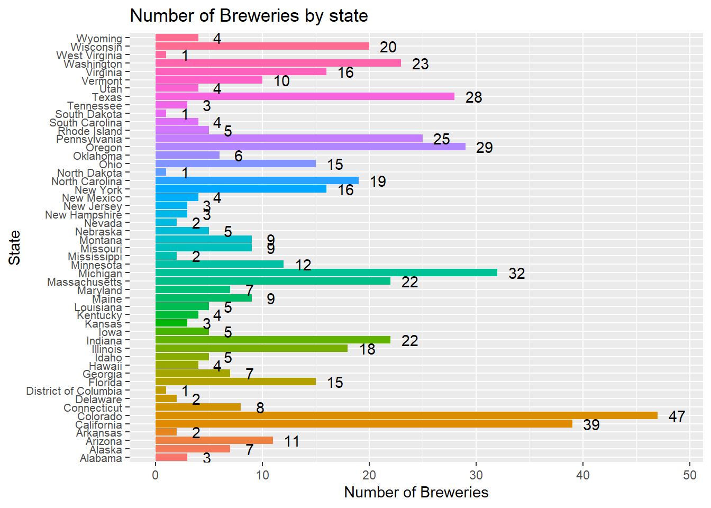
observations and the last six observations to check the merged file. (RMD only, this does not need to be included in the presentation or the deck.)
# Merge beer dataset with Breweries dataset based on the unique ID
BB_merge <- merge(x = beers,y = breweries_merge,by.y = "Brew_ID",by.x = 'Brewery_id', all.x = TRUE)
# Showing first six observations
head(BB_merge,6)## Brewery_id Name.x Beer_ID ABV IBU Style Ounces State Name.y City
## 1 1 Get Together 2692 0.045 50 American IPA 16 MN NorthGate Brewing Minneapolis
## 2 1 Maggie's Leap 2691 0.049 26 Milk / Sweet Stout 16 MN NorthGate Brewing Minneapolis
## 3 1 Wall's End 2690 0.048 19 English Brown Ale 16 MN NorthGate Brewing Minneapolis
## 4 1 Pumpion 2689 0.060 38 Pumpkin Ale 16 MN NorthGate Brewing Minneapolis
## 5 1 Stronghold 2688 0.060 25 American Porter 16 MN NorthGate Brewing Minneapolis
## 6 1 Parapet ESB 2687 0.056 47 Extra Special / Strong Bitter (ESB) 16 MN NorthGate Brewing Minneapolis
## State_Name
## 1 Minnesota
## 2 Minnesota
## 3 Minnesota
## 4 Minnesota
## 5 Minnesota
## 6 Minnesota# showing last six observations
tail(BB_merge,6)## Brewery_id Name.x Beer_ID ABV IBU Style Ounces State Name.y
## 2405 556 Pilsner Ukiah 98 0.055 NA German Pilsener 12 CA Ukiah Brewing Company
## 2406 557 Heinnieweisse Weissebier 52 0.049 NA Hefeweizen 12 NY Butternuts Beer and Ale
## 2407 557 Snapperhead IPA 51 0.068 NA American IPA 12 NY Butternuts Beer and Ale
## 2408 557 Moo Thunder Stout 50 0.049 NA Milk / Sweet Stout 12 NY Butternuts Beer and Ale
## 2409 557 Porkslap Pale Ale 49 0.043 NA American Pale Ale (APA) 12 NY Butternuts Beer and Ale
## 2410 558 Urban Wilderness Pale Ale 30 0.049 NA English Pale Ale 12 AK Sleeping Lady Brewing Company
## City State_Name
## 2405 Ukiah California
## 2406 Garrattsville New York
## 2407 Garrattsville New York
## 2408 Garrattsville New York
## 2409 Garrattsville New York
## 2410 Anchorage Alaskamissing.values <- BB_merge %>% as.data.frame %>%
gather(key = "key", value = "val") %>%
mutate(is.missing = is.na(val)) %>%
group_by(key, is.missing) %>%
summarise(num.missing = n()) %>%
filter(is.missing==T) %>%
select(-is.missing) %>%
arrange(desc(num.missing)) ## `summarise()` has grouped output by 'key'. You can override using the `.groups` argument.missing.values %>% kable()| key | num.missing |
|---|---|
| IBU | 1005 |
| ABV | 62 |
| State_Name | 8 |
## Graphical representation of the missing values on ABV & IBU
missing.values %>% ggplot(aes(x=key, y=num.missing, fill = key,group=num.missing))+
geom_bar(stat='identity',position = 'dodge')+geom_text(aes(label=num.missing),position = position_dodge(width = 2))+
ggtitle('Missing Values on ABV & IBU')+xlab('Fields') +ylab('Missing Values') + theme(legend.position = "none") + coord_flip()## Warning: position_dodge requires non-overlapping x intervals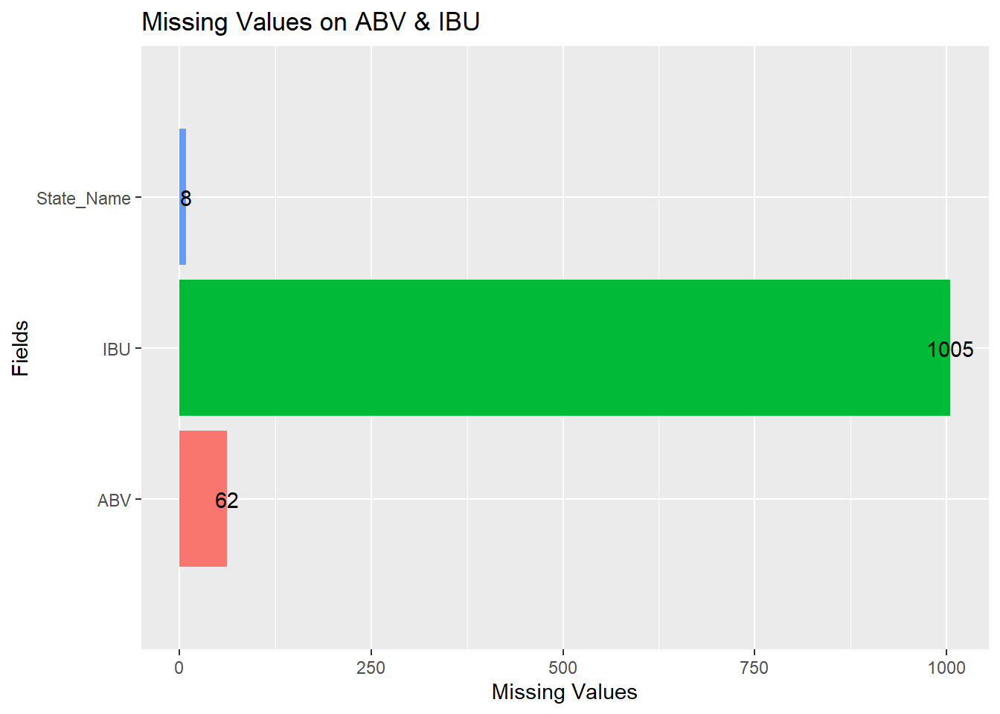
## Compute and plot the median alcohol content by each state.
BB_merge_final <- BB_merge %>% group_by(State) %>% mutate(median_ABV = median(ABV,na.rm = TRUE))
## Plot a bar chart for median ABV.
BB_merge %>%filter(!is.na(State_Name)) %>%group_by(State_Name) %>% summarise(median_ABV = median(ABV, na.rm= T)) %>% ggplot(aes(x=State_Name, y= median_ABV, fill = State_Name)) +geom_bar(stat = "Summary", position = "dodge") + geom_text(aes(label = median_ABV), nudge_y = 0.004)+ ggtitle("Alcohol Content") + xlab('State')+ ylab('mediane') + theme(legend.position = "none", axis.text.y = element_text(size=8)) + coord_flip() ## No summary function supplied, defaulting to `mean_se()`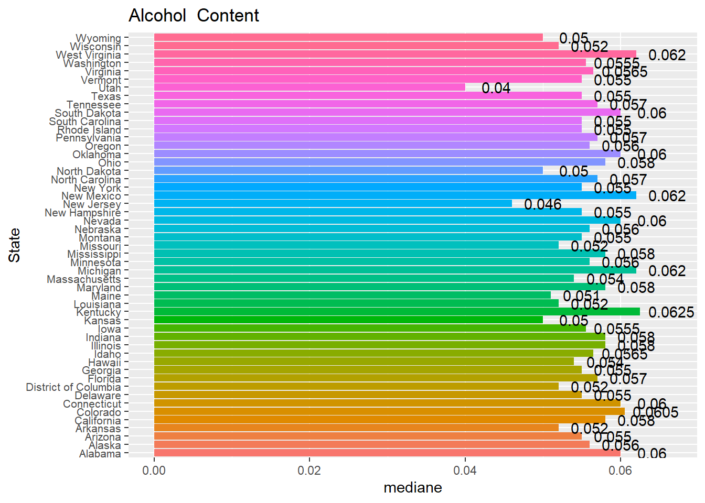
## Compute and plot the median international bitterness unit by each state.
BB_merge_final <- BB_merge_final %>% group_by(State) %>% mutate(median_IBU = median(IBU,na.rm = TRUE))
## Plot a bar chart for median IBU.
BB_merge %>% filter(!is.na(State_Name)) %>% group_by(State_Name) %>% summarise(median_IBU = median(IBU, na.rm= T)) %>% ggplot(aes(x=State_Name, y= median_IBU, fill = State_Name)) +
geom_bar(stat = "Summary", position = "dodge") + geom_text(aes(label = median_IBU), nudge_y = 0.004)+ ggtitle("International Bitterness") + xlab('State')+ ylab('mediane') + theme(legend.position = "none", axis.text.y = element_text(size=8)) + coord_flip()## Warning: Removed 1 rows containing non-finite values (stat_summary).## No summary function supplied, defaulting to `mean_se()`## Warning: Removed 1 rows containing missing values (geom_text).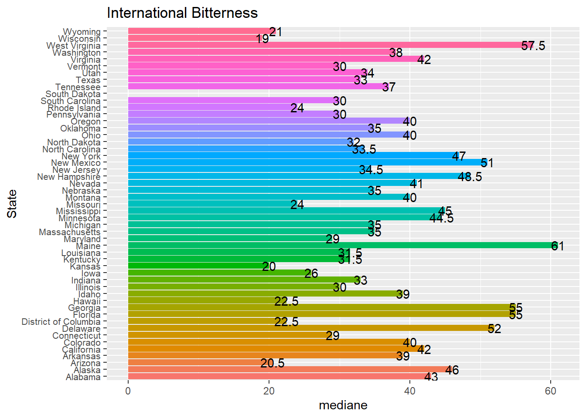
BB_merge$State_Name[which.max(BB_merge$ABV)]## [1] "Colorado"BB_merge$State_Name[which.max(BB_merge$IBU)]## [1] "Oregon"BB_merge %>% filter(!is.na(State_Name))%>% group_by(State_Name) %>% summarise(max_ABV = max(ABV, na.rm = T)) %>% ggplot(aes(x= max_ABV , y = State_Name, fill=State_Name)) +
geom_bar(position='dodge',stat = 'summary') + geom_text(aes(label = max_ABV), nudge_x = 0.01) + theme(legend.position = "none", axis.text.y = element_text(size=8))## No summary function supplied, defaulting to `mean_se()`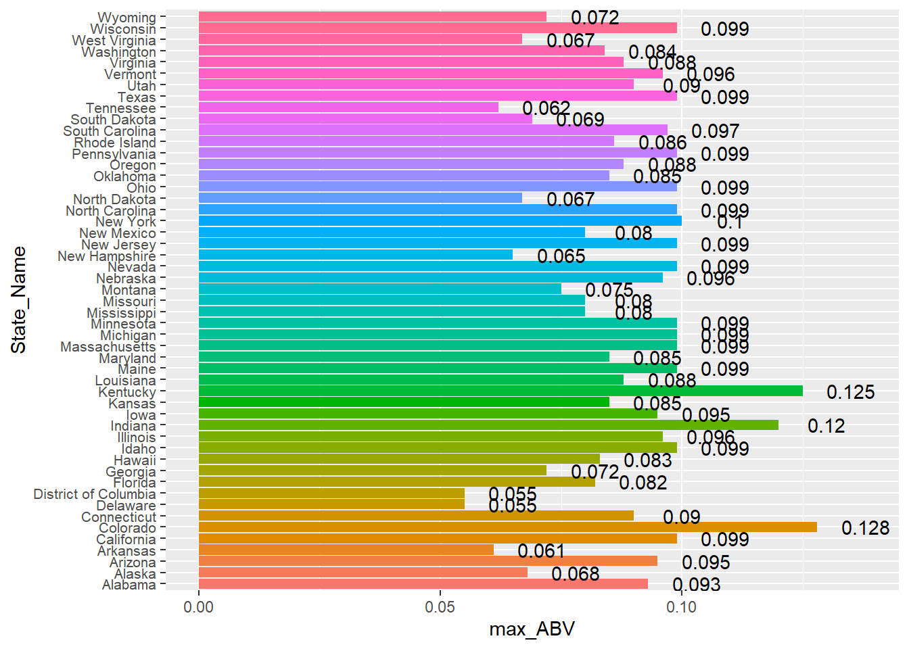
BB_merge %>% filter(!is.na(State_Name)) %>% group_by(State_Name) %>% summarise(max_IBU = max(IBU, na.rm = T)) %>% ggplot(aes(x= max_IBU , y = State_Name, fill=State_Name)) +
geom_bar(position='dodge',stat = 'summary') + geom_text(aes(label = max_IBU), nudge_x = 0.01) + theme(legend.position = "none", axis.text.y = element_text(size=8))## Warning in max(IBU, na.rm = T): no non-missing arguments to max; returning -Inf## Warning: Removed 1 rows containing non-finite values (stat_summary).## No summary function supplied, defaulting to `mean_se()`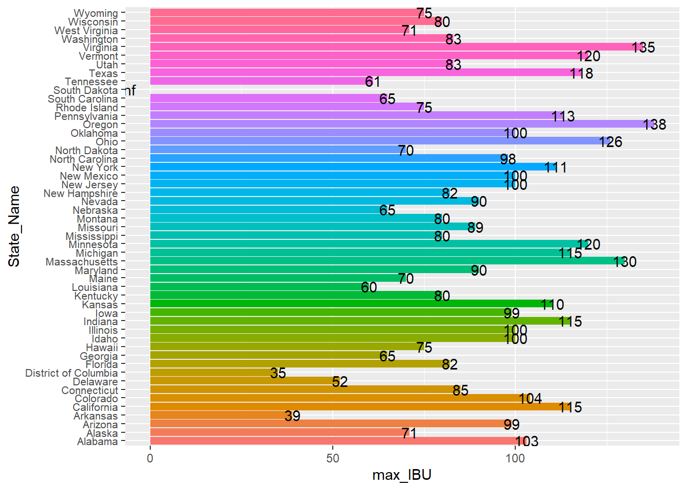
BB_merge$scaledIBU <- scale(BB_merge$IBU)
BB_merge$scaledABV <- scale(BB_merge$ABV)
coef(lm(scaledIBU ~ scaledABV, data = BB_merge))## (Intercept) scaledABV
## -0.00693796 0.66891271BB_merge %>% ggplot(aes(y=scaledABV, x=scaledIBU)) + geom_point(color='blue') + geom_smooth(method = 'lm',se=TRUE, color = "Red") #+geom_abline(intercept = -2.959529, slope=49.39)## `geom_smooth()` using formula 'y ~ x'## Warning: Removed 1005 rows containing non-finite values (stat_smooth).## Warning: Removed 1005 rows containing missing values (geom_point).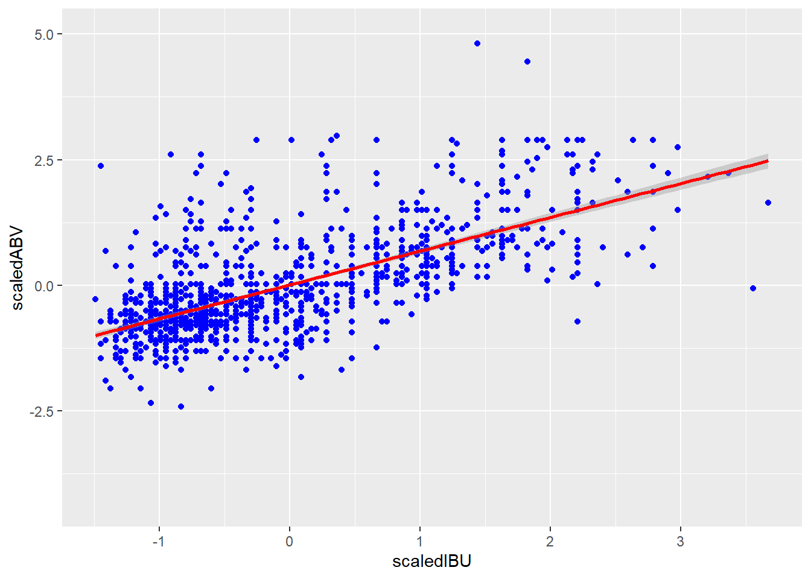
#Filtering out IPA and Ale
BB_merge_mutate <- BB_merge %>% mutate(target_var = ifelse(str_detect(Style,regex(" Ale",ignore_case = T)),"Ale", ifelse(str_detect(Style,regex(" IPA", ignore_case = T)),"IPA",'NA')))
BB_merge_filtered <- BB_merge_mutate %>% filter(target_var != "NA")
BB_merge_filtered <- BB_merge_filtered %>% filter(!is.na(ABV) & !is.na(IBU))
BB_merge_filtered %>% ggplot(aes(x=IBU, y=ABV, color=target_var)) + geom_point()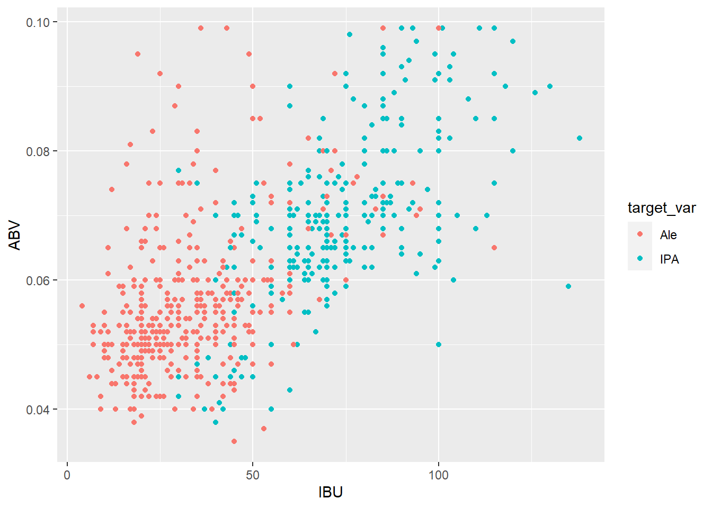
BB_merge_filtered %>% filter(is.na(ABV))## [1] Brewery_id Name.x Beer_ID ABV IBU Style Ounces State Name.y City State_Name
## [12] scaledIBU scaledABV target_var
## <0 rows> (or 0-length row.names)BB_merge_filtered$scaleABV <- scale(BB_merge_filtered$ABV)
BB_merge_filtered$scaleIBU <- scale(BB_merge_filtered$IBU)
IPA <- BB_merge_final[str_detect(BB_merge_final$Style, "IPA"), ]
Ale <- BB_merge_final[str_detect(BB_merge_final$Style, "Ale"), ]
#replace entire name in style with "IPA"
replace_IPA<-IPA %>% mutate(Style = paste0( ifelse(grepl("IPA", Style), "IPA", '')))
#replace entire name in styler with "Ale"
replace_Ale<-Ale %>% mutate(Style = paste0( ifelse(grepl("Ale", Style), "Ale", '')))
total<-rbind(replace_IPA,replace_Ale)
head(total)## # A tibble: 6 x 13
## # Groups: State [3]
## Brewery_id Name.x Beer_ID ABV IBU Style Ounces State Name.y City State_Name median_ABV median_IBU
## <int> <chr> <int> <dbl> <int> <chr> <dbl> <chr> <chr> <chr> <chr> <dbl> <dbl>
## 1 1 Get Together 2692 0.045 50 IPA 16 MN "NorthGate Brewing " Minneap~ Minnesota 0.056 44.5
## 2 2 Citra Ass D~ 2686 0.08 68 IPA 16 KY "Against the Grain ~ Louisvi~ Kentucky 0.0625 31.5
## 3 2 Rico Sauvin 2678 0.076 68 IPA 16 KY "Against the Grain ~ Louisvi~ Kentucky 0.0625 31.5
## 4 2 Pile of Face 2675 0.06 65 IPA 16 KY "Against the Grain ~ Louisvi~ Kentucky 0.0625 31.5
## 5 4 Habitus (20~ 2668 0.08 100 IPA 16 CA "Mike Hess Brewing ~ San Die~ California 0.058 42
## 6 4 Solis 2667 0.075 85 IPA 16 CA "Mike Hess Brewing ~ San Die~ California 0.058 42#geom_smooth(method = "lm")+
total%>% ggplot(aes(x = median_IBU, y = median_ABV, color=Style)) + geom_point() +
ggtitle("Alcohol Content vs. Bitterness") +
xlab("Bitterness(IBU)") + ylab("Alcohol by volume(ABV)")## Warning: Removed 5 rows containing missing values (geom_point).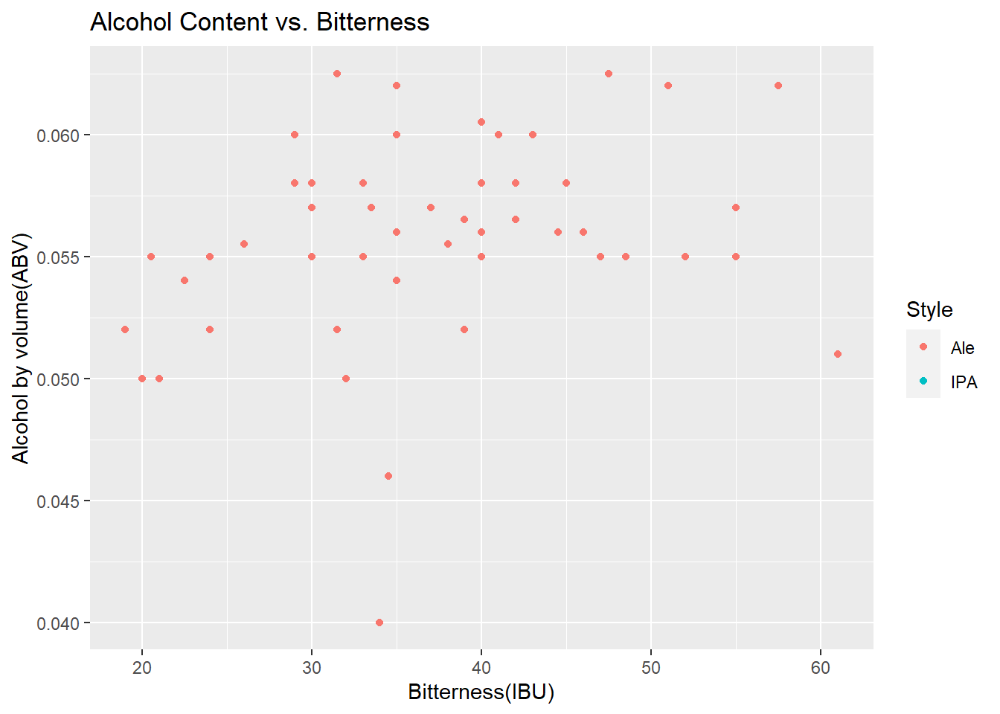
replace_IPA%>% ggplot(aes(x = median_IBU, y = median_ABV, color=Style)) + geom_point() +
geom_smooth(method = "lm")+
ggtitle("IPA Alcohol Content vs. Bitterness") +
xlab("Bitterness(IBU)") + ylab("Alcohol by volume(ABV)")## `geom_smooth()` using formula 'y ~ x'## Warning: Removed 1 rows containing non-finite values (stat_smooth).## Warning: Removed 1 rows containing missing values (geom_point).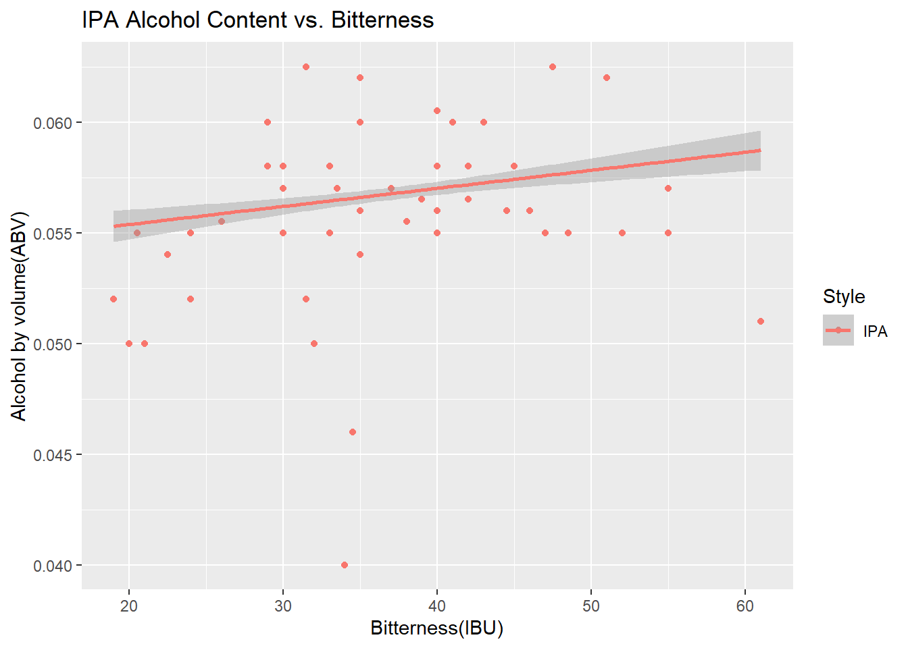
replace_Ale%>% ggplot(aes(x = median_IBU, y = median_ABV, color=Style)) + geom_point() +
geom_smooth(method = "lm")+
ggtitle("Ale-Alcohol Content vs. Bitterness") +
xlab("Bitterness(IBU)") + ylab("Alcohol by volume(ABV)")## `geom_smooth()` using formula 'y ~ x'## Warning: Removed 4 rows containing non-finite values (stat_smooth).## Warning: Removed 4 rows containing missing values (geom_point).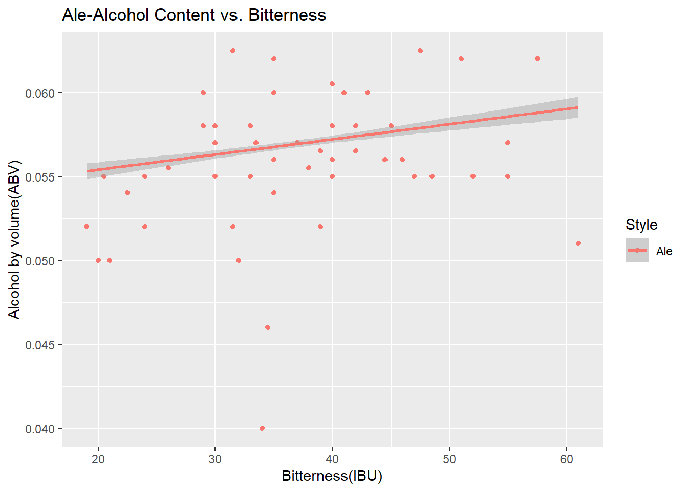
set.seed(6)
splitPerc = .70
total=na.omit(total)#Omit rows with NAs.
trainIndices = sample(1:dim(total)[1],round(splitPerc * dim(total)[1]))
train = total[trainIndices,]
test = total[-trainIndices,]
## Loop for many k and one training / test partition
accs = data.frame(accuracy = numeric(90), k = numeric(90))
for(i in 1:90)
{
classifications = knn(train[,c(4,5)],test[,c(4,5)],train$Style, prob = TRUE, k = i)
table(test$Style,classifications)
CM = confusionMatrix(table(test$Style,classifications))
accs$accuracy[i] = CM$overall[1]
accs$k[i] = i
}
plot(accs$k,accs$accuracy, type = "l", xlab = "k")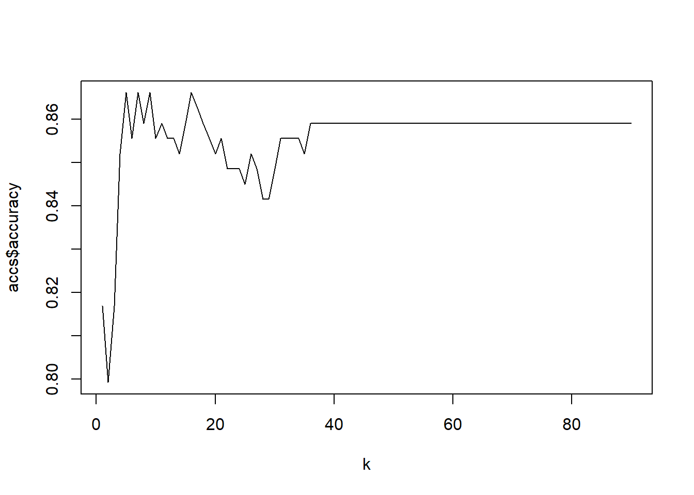
#CM
classifications = knn(train[,c(4,5)],test[,c(4,5)],train$Style, prob = TRUE, k = 35)
table(classifications,test$Style)##
## classifications Ale IPA
## Ale 154 25
## IPA 17 88confusionMatrix(table(classifications,test$Style))## Confusion Matrix and Statistics
##
##
## classifications Ale IPA
## Ale 154 25
## IPA 17 88
##
## Accuracy : 0.8521
## 95% CI : (0.8054, 0.8913)
## No Information Rate : 0.6021
## P-Value [Acc > NIR] : <2e-16
##
## Kappa : 0.6876
##
## Mcnemar's Test P-Value : 0.2801
##
## Sensitivity : 0.9006
## Specificity : 0.7788
## Pos Pred Value : 0.8603
## Neg Pred Value : 0.8381
## Prevalence : 0.6021
## Detection Rate : 0.5423
## Detection Prevalence : 0.6303
## Balanced Accuracy : 0.8397
##
## 'Positive' Class : Ale
## #Which style of beer occurs most?
Lager <- BB_merge_final[str_detect(BB_merge_final$Style, "Lager"), ]
Porter <- BB_merge_final[str_detect(BB_merge_final$Style, "Porter"), ]
Stout <- BB_merge_final[str_detect(BB_merge_final$Style, "Stout"), ]
Bock <- BB_merge_final[str_detect(BB_merge_final$Style, "Bock"), ]
Cider <- BB_merge_final[str_detect(BB_merge_final$Style, "Cider"), ]
Pilsner <- BB_merge_final[str_detect(BB_merge_final$Style, "Pilsner"), ]
replace_Lager<-Lager %>% mutate(Style = paste0( ifelse(grepl("Lager", Style), "Lager", '')))
replace_Porter<-Porter %>% mutate(Style = paste0( ifelse(grepl("Porter", Style), "Porter", '')))
replace_Stout<-Stout %>% mutate(Style = paste0( ifelse(grepl("Stout", Style), "Stout", '')))
replace_Bock<-Bock %>% mutate(Style = paste0( ifelse(grepl("Bock", Style), "Bock", '')))
replace_Cider<-Cider %>% mutate(Style = paste0( ifelse(grepl("Cider", Style), "Cider", '')))
replace_Pilsner<-Pilsner %>% mutate(Style = paste0( ifelse(grepl("Pilsner", Style), "Pilsner", '')))
other<-rbind(replace_IPA,replace_Ale,replace_Lager,replace_Porter,replace_Stout,replace_Bock,replace_Cider,replace_Pilsner)
other %>% ggplot(aes(x=Style, fill=Style),stat='count')+
geom_bar()+
ggtitle('Different Style of Beer')+
xlab('Beer Style')+ylab('Count')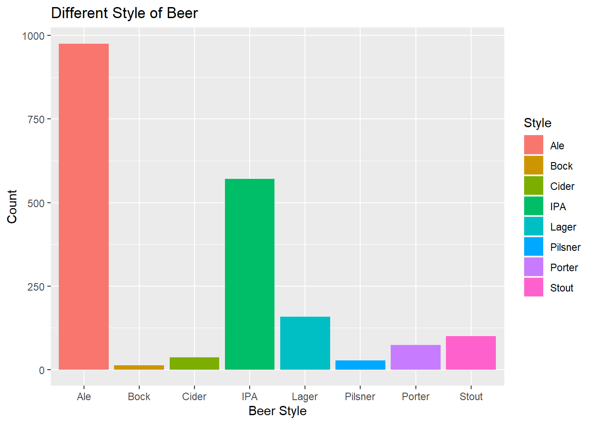
6) Comment on the summary statistics and distribution of the ABV variable.
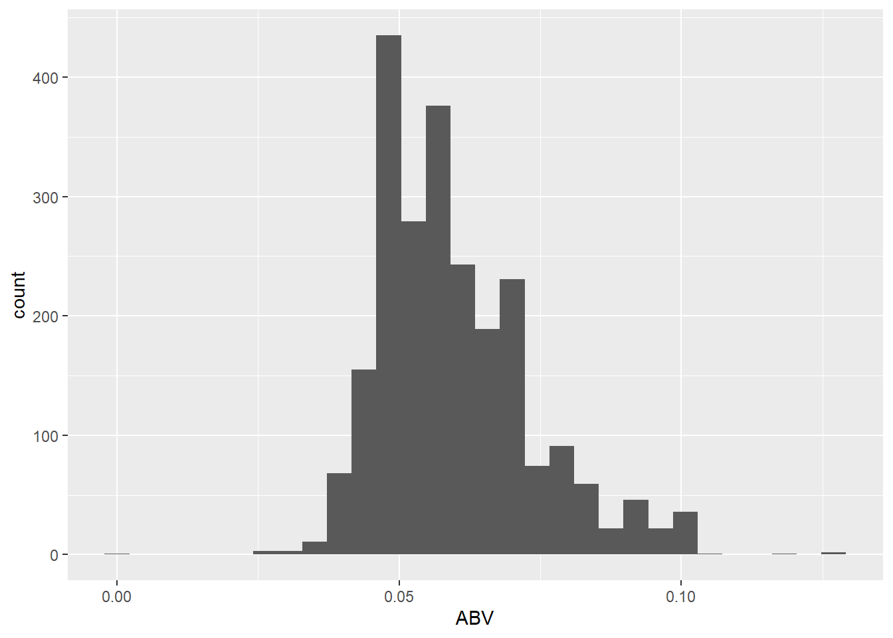
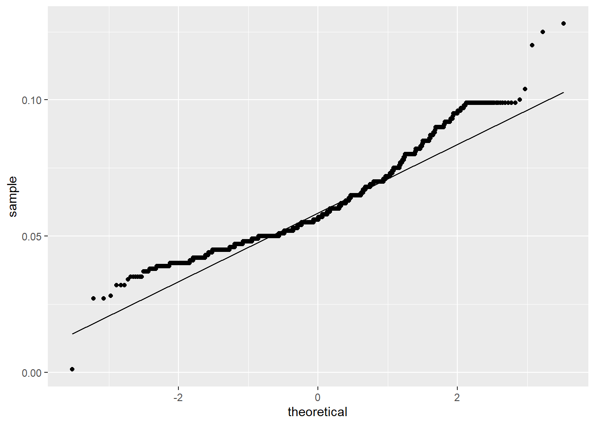